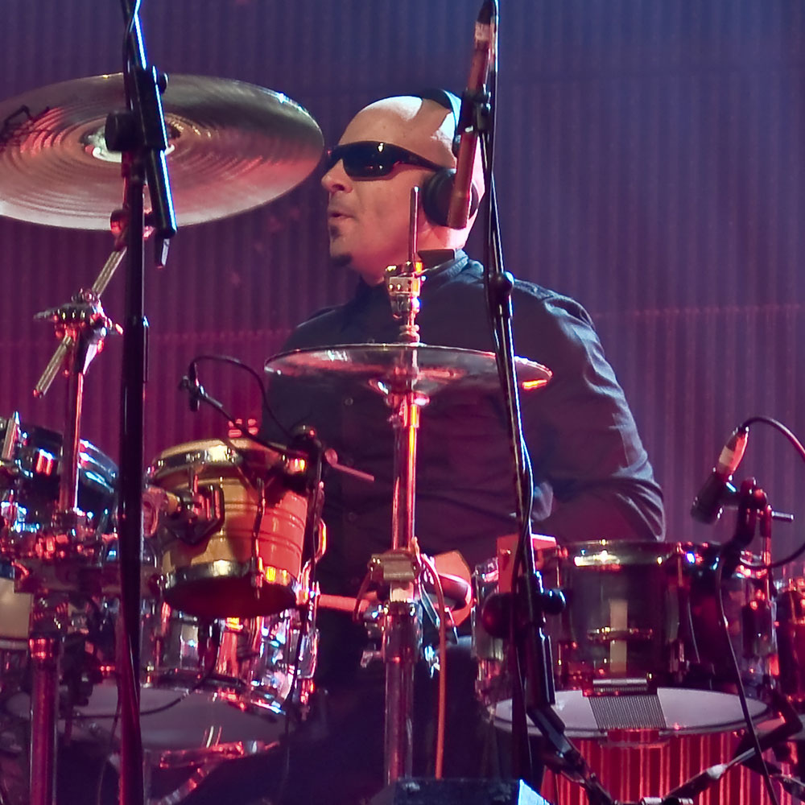

Pendulum – australijsko-brytyjski zespół tworzący muzykę drum & bassową, który zyskał ogromną popularność dzięki unikalnemu połączeniu elementów rocka i metalu z drum and bassem
| Muzyk | Instrument | Od kiedy w zespole | Zdjęcie |
|---|---|---|---|
| Rob Swire | Wokal, syntezatory, gitara, DJ, produkcja | 2002 | |
| Gareth McGrillen | Gitara basowa, wokal wspierający, DJ, MC, produkcja | 2002 | |
| Paul "El Hornet" Harding | Perkusja, instrumenty perkusyjne, DJ, produkcja | 2002 | |
| Peredur ap Gwynedd | Gitara | 2006 | |
| Kevin Sawka | Perkusja | 2009 |
| Muzyk | Instrument | Okres w zespole | Zdjęcie |
|---|---|---|---|
| Paul Kodish | Perkusja | 2006-2009 |  |
| Ben Mount | MC | 2006-2018 |

Rok wydania: 2005
Rok wydania: 2008
Rok wydania: 2010
Rok wydania: 2021
Rok wydania: 2023